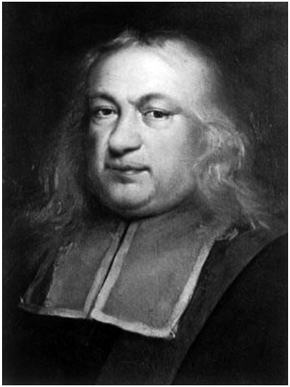
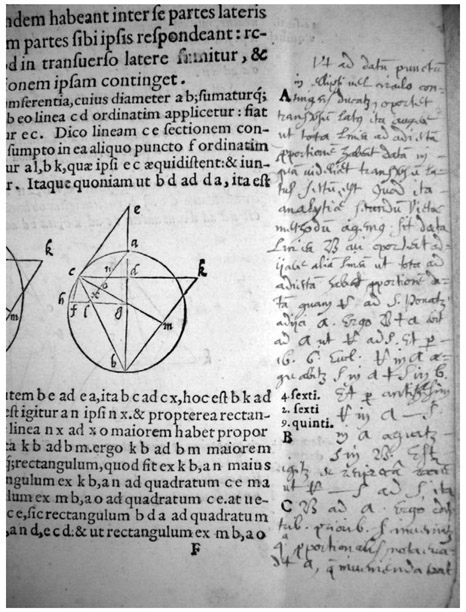
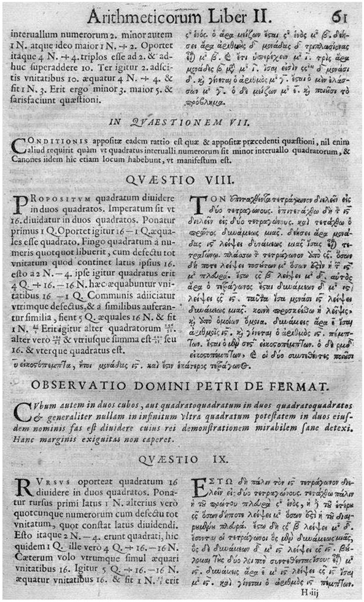

Pierre de Fermat: French (1607–1665)
Today, research in mathematics is fragmented into a vast number of branches and sub-branches, all having their own defined community of mathematicians. In pure mathematics alone, there are more than one hundred journals of excellent reputation; they are devoted to particular fields and publish only high-quality articles containing important new findings. Mathematicians meet at international conferences to present their work, plan collaborations, and exchange ideas. Unless a conference is exclusively devoted to a very special topic, most of the presentations will be comprehensible only to a small minority of the audience. This is simply a consequence of the high degree of specialization to which mathematicians must adhere in order to get a chance to make new and relevant contributions to their field of research. In fact, even for the most outstanding mathematicians, it has become virtually impossible to be an expert in several different branches at the same time. Needless to say, it is totally inconceivable that someone who is not a professional mathematician would be able to obtain significant new insights anywhere near the forefront of current research. In the seventeenth century, mathematics had not yet branched into so many almost-disjointed subjects, and, at least in principle, it was still possible for “spare-time mathematicians” to gain enough knowledge and competence to not only correspond with and earn the respect of renowned mathematicians in academic positions but also even pursue their own ideas with success—and, in some cases, eventually contribute pioneering work. This is certainly true for the French mathematician Pierre de Fermat (1607–1665), who is still famous for his work in mathematics, even though he actually was a lawyer who could occupy himself with mathematics only alongside his professional obligations at the Parliament1 of Toulouse in France.

Figure 15.1. A seventeenth-century portrait of Pierre de Fermat.
Fermat was born in the fall of 1607, in Beaumont-de-Lomagne, France, where his father, Dominique Fermat, a wealthy leather merchant, served three one-year terms as one of the four consuls governing the town. Pierre’s mother, Claire de Long, was a noblewoman. She died in childbed in 1615. There is little evidence regarding Pierre’s school education, and we don’t know whether he had a mentor in mathematics at school or what motivated his interest in mathematics. What is known is that he studied at the University of Orléans, where he received a bachelor’s degree in civil law in 1626. He then moved to Bordeaux to work as lawyer. In Bordeaux, Fermat got in contact with the lineographer and mathematician Jean de Beaugrand, and he also formed a lifelong friendship with Etienne d’Espagnet, who had inherited a huge and very well-equipped library from his father, the Renaissance polymath Jean d’Espagnet. The mathematics section of the library contained works by Euclid, Apollonius of Perga, and François Viètes (1540–1603), also known as Franciscus Vieta, who was, in fact, a friend of Jean d’Espagnet. Fermat eagerly read these books, thoroughly studying the presented material and adding his own notes in the margins (see fig. 15.2).

Figure 15.2. Handwritten notes of Pierre Fermat in a Latin transcription of Apollonius’s Conics.
Having gained extensive knowledge in mathematics, Fermat began his own mathematical investigations, concerned with tangents to algebraic curves and finding minima and maxima of functions. In parallel, he reconstructed Apollonius’s lost work De Locis Planis, described in some detail by Pappus of Alexandria. It contained propositions relating to loci that are either straight lines or circles. Fermat inherited a fortune when his father died in 1628. He bought the office of a deceased councilor at the parliament in Toulouse and became his successor there. With his inauguration as a government official in 1631, he was entitled to change his name from Pierre Fermat to Pierre de Fermat, a right he himself, however, never made use of. In the same year, he married Louise de Long, his fourth-degree cousin. They had eight children, five of whom survived into adulthood. In 1636, Fermat’s friend Pierre de Carcavi went to Paris and met Marin Mersenne, whom he told about Fermat’s mathematical research. Mersenne then wrote to Fermat, and they began a correspondence that lasted until Mersenne’s death in 1648. Fermat stayed in Toulouse for the rest of his life, visiting only nearby towns from time to time. He never traveled any further than to Bordeaux,2 so his communication with other mathematicians was restricted to writing letters. With Mersenne as a mediator, Fermat corresponded with Galileo Galilei, Blaise Pascal, John Wallis, Christiaan Huygens, and René Descartes. Through his correspondence, Fermat quickly became known as a leading mathematician, although he rarely published his results, because he did not want to spend too much time on polishing the proofs for publication. Yet the letters that have survived, in conjunction with posthumously published writings and notes, clearly show that he made pioneering works in several fields of mathematics. Independent of Descartes, Fermat developed analytic geometry. There was a famous controversy between Fermat and Descartes regarding the soundness of their mathematical methods, with Descartes finally giving in and writing the following to Fermat:
. . . seeing the last method that you use for finding tangents to curved lines, I can reply to it in no other way than to say that it is very good and that, if you had explained it in this manner at the outset, I would have not contradicted it at all.3
Fermat’s method of finding the tangent to a curve was based on calculating the differential of the function describing the curve, essentially in the same way that differential quotients are computed in an elementary calculus course today. However, Fermat was lacking the concept of a limit to justify his calculations. A mathematically consistent formulation of modern calculus was established thirty years later by Newton and Leibniz. Interestingly, Newton wrote that the ideas that led to his invention of calculus were inspired by “Fermat’s way of drawing tangents.”4 Moreover, Fermat is recognized as a key figure in the historical development of the fundamental principle of least action in physics. The principle of least action is a generalization of Fermat’s principle of least time, named Fermat’s principle in his honor. It states that light travels between two given points along the path of shortest time. Fermat was able to deduce Snell’s law of refraction from his principle of least time.
Surprisingly, Fermat was not really interested in physics, but, when reading Descartes’s treatise on optics, “La Dioptrique,” he discovered that Descartes’s heuristic derivation of the law of refraction was based on circular reasoning. Descartes became angry about Fermat’s critique of his work, and this was the beginning of their disputes. Fermat’s mathematical correspondence was interrupted between 1644 and 1653; perhaps his duties at the parliament did not allow him to continue with his mathematical research during this period of time. However, in 1654, Fermat received a letter from Blaise Pascal, who wanted to discuss his calculations of probabilities. Their resulting correspondence laid the foundation of probability theory (see chap. 16). Yet, Fermat’s main mathematical interest, if not obsession, was number theory. Unfortunately, none of the mathematicians he was in contact with shared his enthusiasm for this topic, as it was not considered very important at that time. He tried to persuade Pascal, as well as Huygens, to join him in his research in number theory, but he wasn’t successful. Fermat, indeed, made some important contributions to number theory, but he was not interested in publishing his work. Concerning his discussions with Pascal on the calculation of probabilities, Fermat wrote to Carcavi:
I am delighted to have had opinions conforming to those of M Pascal, for I have infinite esteem for his genius. . . . The two of you may undertake that publication, of which I consent to your being the masters, you may clarify or supplement whatever seems too concise and relieve me of a burden that my duties prevent me from taking on.5
Fermat enjoyed posing problems to the leading mathematicians of his time. However, he rarely provided complete proofs for his theorems; often, he only sketched the method, and it was left to others to fill in the gaps. Number theory was not very fashionable at this time, and more than one hundred years went by until Leonhard Euler took up Fermat’s studies and gave full proofs to some of the results or conjectures that Fermat had formulated without providing rigorous proofs. In 1659, Fermat wrote a letter to Carcavi, intended for Huygens, in which he gave a brief summary of his accomplishments in number theory and also revealed some of his methods, in particular the method of infinite descent.6 In the last paragraph, he wrote,
And Perhaps posterity will thank me for having shown it that the ancients did not know everything, and this account will pass into the mind of those who come after me as a “passing of the torch” to the next generation.7
In 1653, Fermat was struck down by the plague and survived, but this episode probably had some long-term effects on his health. In a 1660 letter to Pascal, who lived in Clermont-Ferrand, about 236 miles from Toulouse, Fermat suggested they meet halfway between the two towns, since “my health is not any better than yours.”8 In 1664, he felt that his life would soon come to an end and wrote his last will and testament. He kept working as a judge at the parliament as long as he could, and he died in Castres, France, at the age of fifty-seven, on January 12, 1665—just one week after his last official act.
The most famous theorem of Fermat, for which he is remembered today, has a fascinating history and is in many ways characteristic of both his style as a mathematician and his work’s significance for later developments in mathematics. It is known as Fermat’s last theorem, and it can be stated as follows:
The equation xn + yn = zn has no positive integer solutions for x, y, and z when n > 2.
For n = 2, we would obtain the Pythagorean theorem, x2 + y2 = z2, and this equation has, in fact, infinitely many integer solutions, which are called Pythagorean triples. For instance, the numbers 3, 4, and 5 form a Pythagorean triple, since 32 + 42 = 52. After having found one Pythagorean triple, one can easily generate infinitely many others by multiplying each of the three numbers by the same positive integer (e.g., multiplication by 2 yields the numbers 6, 8, 10, which also form a Pythagorean triple). Fermat’s last theorem was first discovered by his son, Samuel, in the margin in his father’s copy of an edition of Diophantus’s Arithmetica, together with the note:
I have a truly marvelous demonstration of this proposition which this margin is too narrow to contain.9
Fermat’s proof was never found; however, Samuel republished Diophantus’s Arithmetica, along with his father’s marginal notes, in 1670 (see fig. 15.3) This popularized Fermat’s last theorem, which became a famous

Figure 15.3. Diophantus’s Arithmetica, including a note from Pierre de Fermat, outlining his last theorem, under the heading OBSERVATIO DOMINI PETRI DE FERMAT.
open problem of mathematics, attracting the attention of many great mathematicians.
In spite of countless attempts to prove it or to find a counter-example, the theorem remained a conjecture until 1994, when the British mathematician Andrew Wiles (1953–) finally succeeded, after working secretly on the problem for six years. The proof comprises more than one hundred pages and was published as the entire issue of May 1995 of the Annals of Mathematics, 358 years after Fermat’s conjecture. The proof relies on very special techniques from modern mathematical theories developed in the twentieth century, and it is incomprehensible for mathematicians who are not working in closely related fields. For solving this famous problem, Wiles was awarded a multitude of prizes, including one of the most prestigious award for mathematicians, the Abel Prize. It is now believed that Fermat’s proclaimed “proof” was highly questionable, although it cannot be completely ruled out that, indeed, he did have a truly remarkable proof. In any case, the unsuccessful attempts to prove his theorem—extending over a period of more than three hundred years—led to an astounding number of more important mathematical discoveries and theories, with fruitful applications in branches of mathematics seemingly not at all related to number theory. Although no leading mathematician really shared his interest in number theory during his lifetime, Pierre de Fermat has managed to engage generations of mathematicians in his preferred field of research for more than three centuries after his death; this alone is quite unique in the field of mathematics.